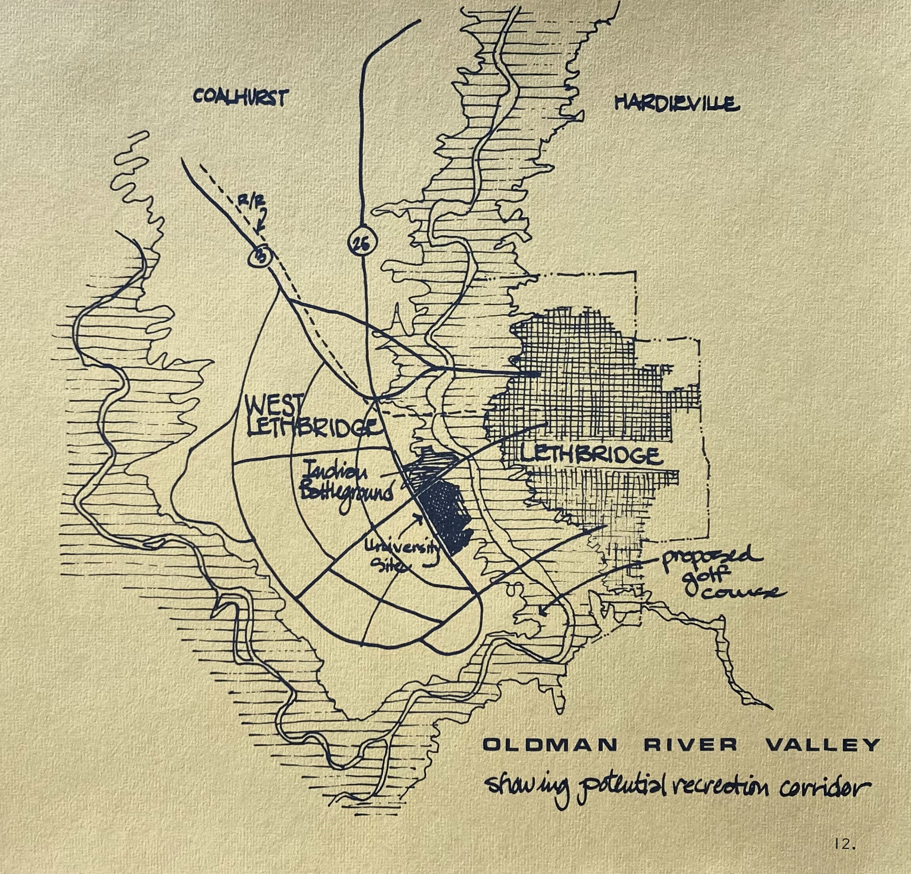
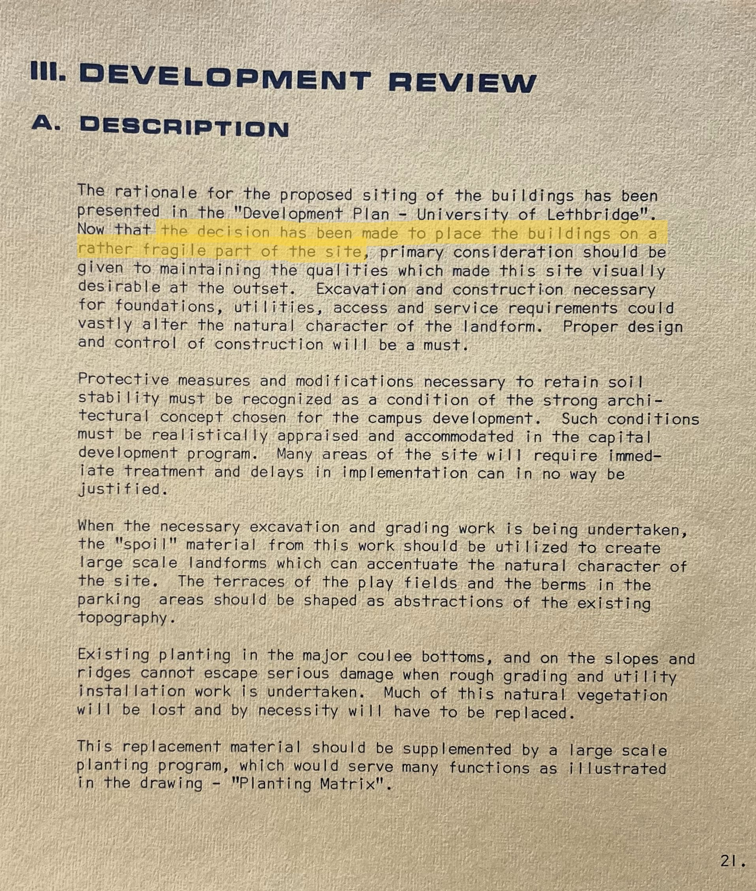
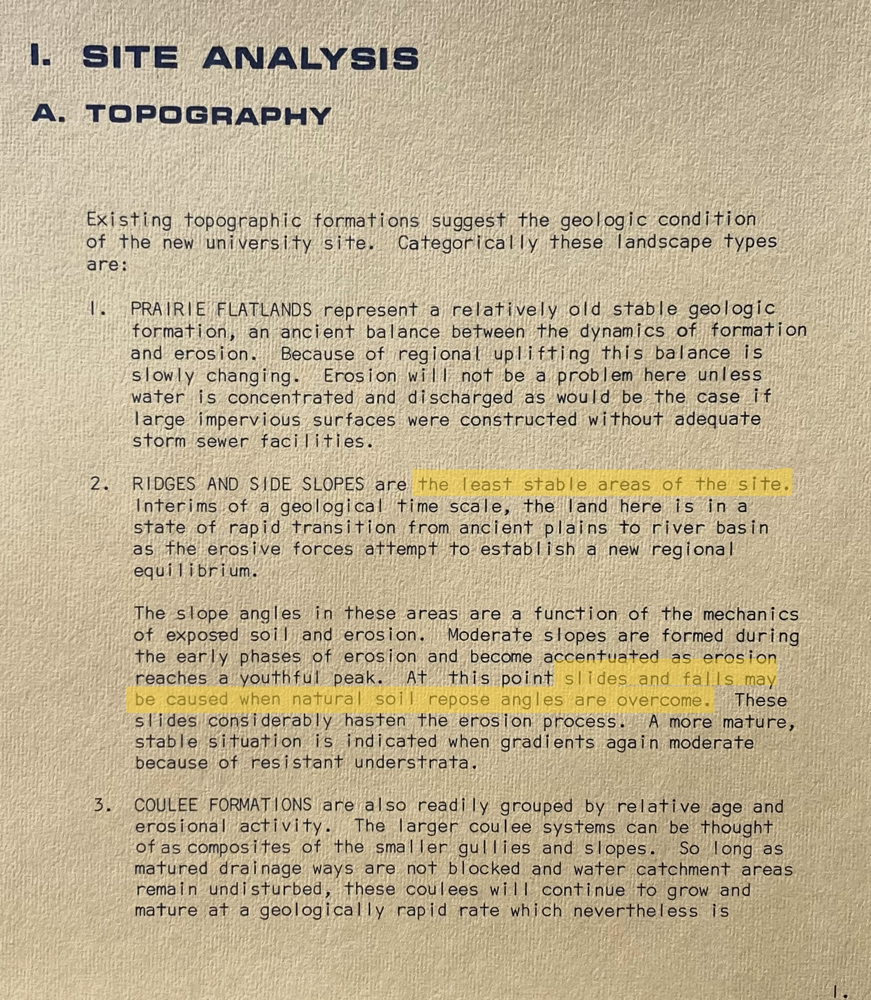

"The first stage in [developing a master plan for the campus] was to gather data on the physical site—especially important given claims that the coulee was geologically unstable. Soil types and stratifications, ground water and drainage patterns, and flood levels of the Oldman River, old mining faults and potential earthquake zones: these were the initial matters to investigate" (Holmes, 1972, p. 234).

"The west coulee location, [opponents] claimed, was hazardous because it had been destabilized by mining tunnels and would crumble" (ibid).
"Because of shifts in the land, some of the pre-cast concrete beams were close to slipping off supporting ledges" (Stouck, 2013, p. 240).
